Get comfortable with your Core.
Start with installation, then follow the parts you need. Each step is short. You can search for a task and keep track of what you have done on this device.
Which setup are you following?
Choose the setup you have or want to reach. This guide cannot read your Core settings, so check your mode in Core’s Configuration tab. You can change this choice and skip steps you have already done.
Install and open Core
Core is an app that runs on your computer. Choose your computer type below, download Core, install it, and open it.
Create the first owner
- Open Core. If the dashboard does not appear, enter
http://127.0.0.1:4000in a browser on the same computer. - If you see Sign in, select New here? to begin setup. On Create owner (first-run setup), make your owner account. If this is already your Core, sign in instead.
- Save the recovery key somewhere safe when Core shows it. You will see it only once.
This dashboard address is for you on your computer. The public link later in this walkthrough uses a separate, safer part of Core.
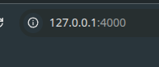
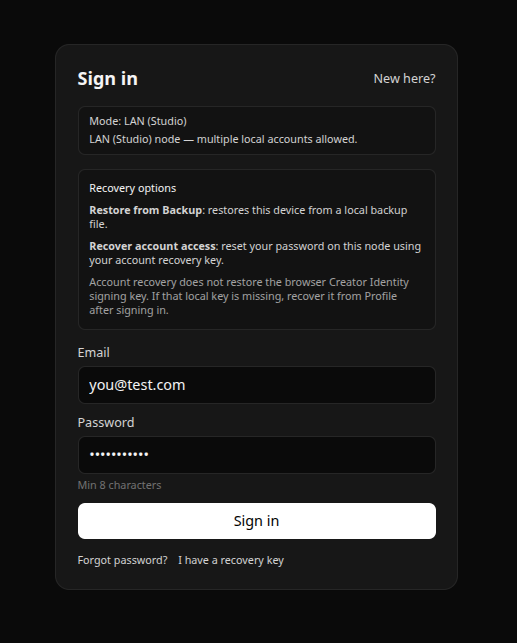
After you create the owner, you can find public-link settings in Configuration near the bottom of Core’s left menu. Choose Show Advanced if the menu item is hidden. On a fresh install, Core begins in Basic Creator. First add your Lightning Address in Profile; the temporary public-link step follows.Next, set up the permanent address for your chosen path.
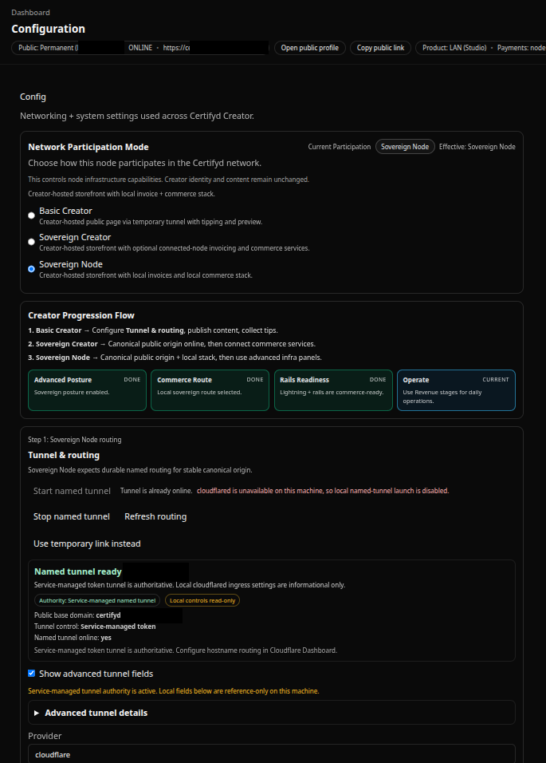
Add your Lightning Address
A Lightning Address looks a little like an email address, such as name@yourwallet.example. It tells Core where you can receive Lightning payments. Copy the receiving address from a wallet you control. This is a public address; never paste a wallet password or recovery words here.
- In Core, open Profile from the left menu and scroll down to Integrations.
- Paste your address into Lightning Address. LNURL is optional. The BTC Address field is unavailable in Basic.
- Press Save payout settings and check that Core says Saved.
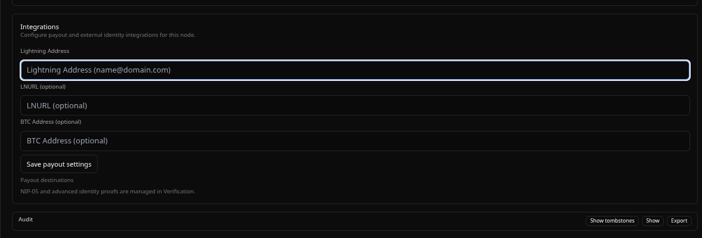
You can do this while Core is still private. Adding the address does not connect a payment provider or unlock priced works and shared splits. The next step starts your temporary public link.
Start a temporary public link
Core starts private. Start a temporary link when you are ready for other people to see your public profile. You do not need a domain for this step.
- In Core, open Configuration → Tunnel & routing and choose Start temporary link.
- Wait until Core shows your new public address, ending in
trycloudflare.com. - At the top of the Core dashboard, find Public. Choose Open public profile to check the link, or Copy public link to share it. Then return to Core and set up your profile.
This link is temporary. Stop closes it without stopping other Cloudflare services on your computer. Core will start private again after a restart; you can start a new link whenever you choose. If you later want a permanent address, follow the separate named tunnel steps.
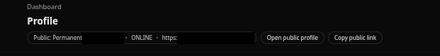
Make your profile yours
- Open Profile. Scroll past Node Account (Local) to Public Profile (Presentation). This is what visitors see.
- Enter a Display name and Bio. Press Save beside the display name.
- Location is optional. If you add one, choose how much of your area to show and press Save approximate public location.
Use an approximate area, not your street address. Your profile link is always at the top of Core under Open public profile and Copy public link.
With your named tunnel ready, check that Open public profile uses your lasting web address. This profile editor is shared with Basic; the permanent address and commerce readiness are what change this setup.
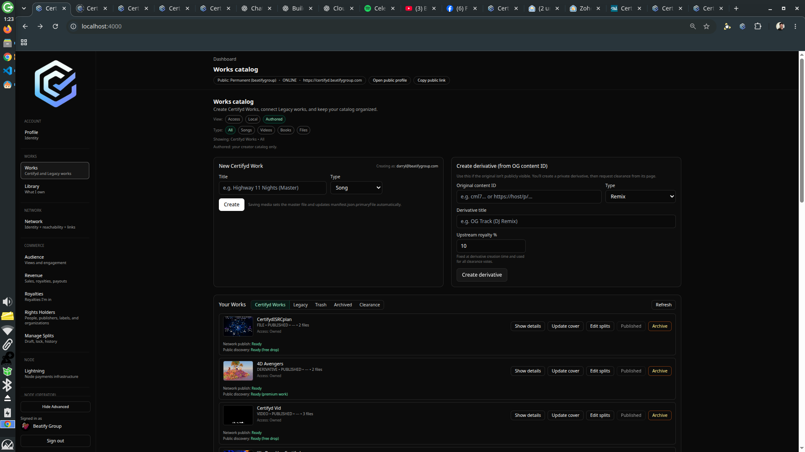
Further down in Profile → Appearance, you can add a wallpaper and change the theme. You can leave this for later.
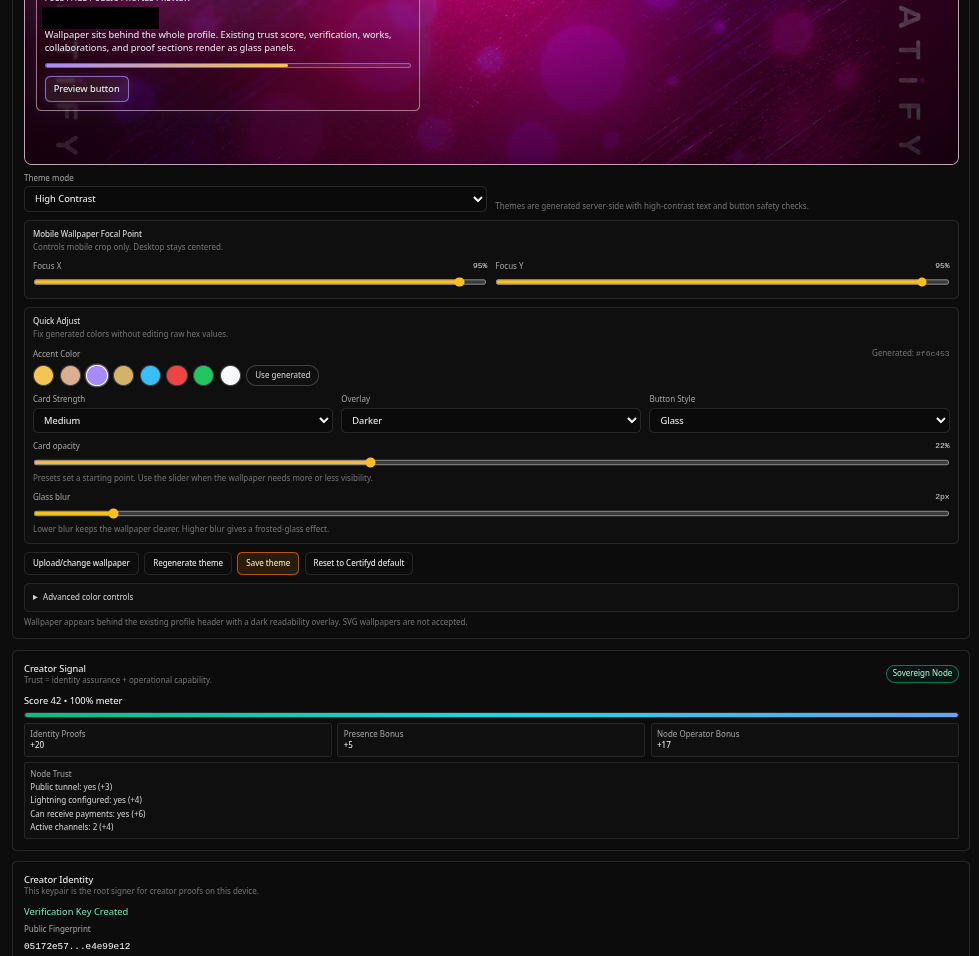
Add a profile picture
- Stay in Profile → Public Profile (Presentation) and find Profile image, just below Bio.
- Choose Upload image and select a picture up to 2 MB. Core also accepts an image URL in that field.
- Check the small round preview beside the field. Clear image removes it if you want to change it later.
This is the picture visitors see on your profile.
Create your first proof
A proof shows that you control an account outside Certifyd. Here is a YouTube example.
- In Profile, create your Creator Identity if Core asks.
- Under Verification Proofs → Creator Platforms, choose Add / Verify platform, then YouTube.
- Paste your YouTube channel address, such as
https://www.youtube.com/@yourhandle, and press Create Social Challenge. - Copy the exact text Core gives you into your YouTube channel’s About section. Back in Core, enter your channel address as the public location and press Verify Social Proof.
- Wait for Core to say it is verified. If YouTube has not shown the new text yet, leave it there and try again later.
Use your channel page, not a link to a video or post. Core shows where to put the proof if you choose another platform.
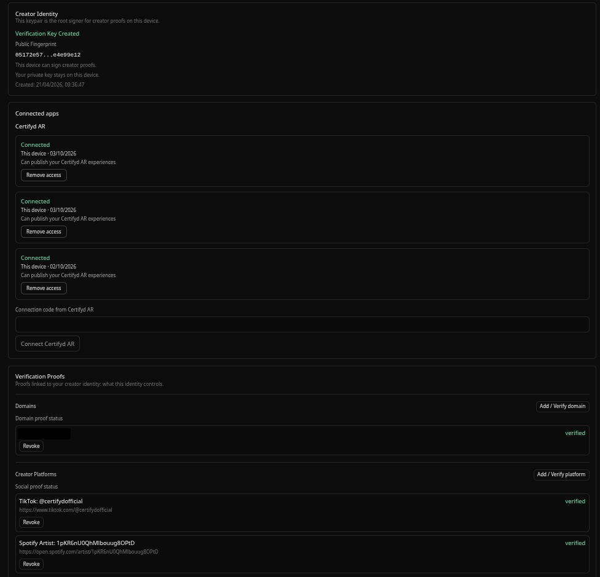
Create your first work
Let’s use one free solo song as the first example.
Create a work you can price or share with another eligible creator. The first steps still begin in Works; the price and split choices come afterward.
- Open Works → New Certifyd Work, enter a title, choose Song for Type, and press Create.
- Find your draft under Your Works → Certifyd Works. Press Save media beside it and choose your song file. Core takes care of storing the work.
- Press Save cover and choose the cover image. Once published, this button says Update cover.
- Press Show details to check the files and fill in more about the work.
The next step walks through the price, delivery, and other details inside Show details.
If the work already lives elsewhere, use the Legacy path after your named tunnel is ready:
In Basic, your work is solo. There is no Edit splits button on its card; you will see Publish when the work is ready. Shared splits and Connect Work need the Sovereign Creator setup.
Finish your work’s details
In Works → Your Works → Certifyd Works, find your draft and press Show details. Scroll down through the work’s settings. The example images show a work that has already been published, so your draft may have fewer details.
- Check the Playback and File identity areas so you know the right media and cover were saved.
- Under Monetization, enter the amount in Price (sats) and press Save price. A sat is a small unit of Bitcoin. A price of 0 means free access. Charging needs your permanent address and connected payment setup.
- Under Delivery, choose the Denotation that matches how you want people to receive the work, such as Stream + download, and press Save delivery. Read the short explanation Core shows beside the choice.
- Under Discovery, choose a Primary topic if one fits. It helps people find the work.
- Under Industry Identifiers, add an existing code such as an ISRC or UPC if you have one. The field is optional; do not invent a code.
- Under Credits, add the people who worked on it, with their names and roles. These describe contributions and are separate from the payment split.
With Basic, keep your first work free and solo. Fill in the details you want, then return to the work card and press Publish. You do not need to edit or lock a split. Pricing for payment and shared splits require the Sovereign Creator setup.
If another creator shares in this work, use Edit a split. Each participant needs a permanent identity and the required commerce setup before they can accept. Set Network Visibility as part of publishing: Hidden, Direct Link, or Discoverable.
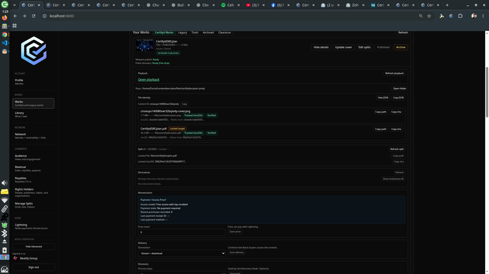
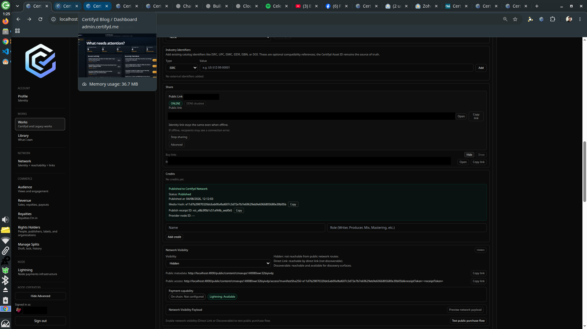
What is the Works tab?
Works is where you create and manage your work. Use Certifyd Works for drafts, files, details, and published releases. Legacy is for work you already have on another platform, once your permanent address and source account proof are ready.
Under Your Works → Certifyd Works, press Show details on a work. You can review its files, playback, and settings. After publishing, Share → Public Link gives you a link to that work. Your profile link is at the top of Core.
Connecting work from another platform does not automatically prove that you own its rights.
What is Rights Holders?
Rights Holders currently contains Connect Work. Use it to add a reference to work you already have on another platform.
- Set up your permanent address first. A temporary link does not unlock this feature.
- Verify the account on the platform where the work lives.
- Open Rights Holders → Connect Work. Paste a Spotify, Apple Music, or YouTube link, or use an existing code such as ISRC.
- Press Discover and check the details Core finds. If Core confirms the requirements, press Connect.
This adds a separate “Legacy” reference to your Works. Verifying a platform account does not establish copyright ownership.
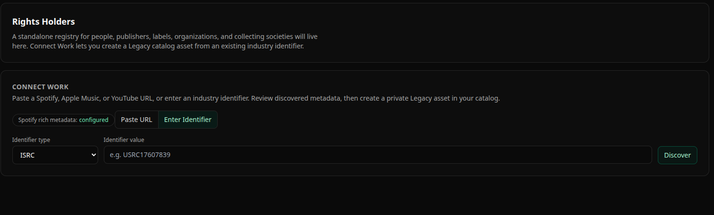
What is Library?
Library is the view of works you can access. It includes your authored work, purchases, and work shared through splits or derivatives. Use Type to see Songs, Videos, Books, or Files, and Relationship → Authored Work to narrow the view to work you created.
When a work’s split is locked and the owner publishes the work from Works, it appears in the accepted split participants’ Libraries. Those participants can then share the work to their own profiles.
Use Works to manage what you create and Library to find what you can access. A work in your Library was not necessarily created by you. For your first publication, follow Find your published work in Library.
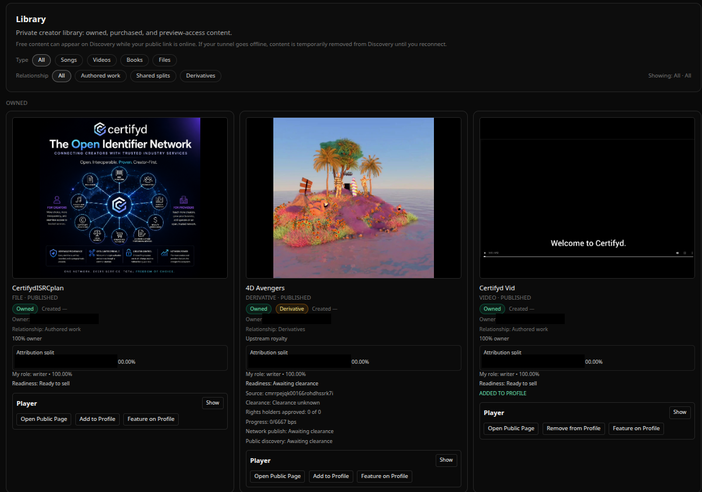
What is the Network tab?
Network is Core’s overview of your public identity and how this setup connects to the wider network. It is more than a connection check. Read the Network Summary first: it separates Identity (your creator profile), Reachability (whether a public route is available), Payment (what payment rails are ready), Participation, the authority for your storefront and commerce, and Visibility.
- Check Mode Summary and the cards beneath it to see what this setup is ready to do. Reachability shows the public address and route; Discoverability describes whether network discovery can see content.
- Under User Network Status, read Network Status, Status message, Suggested action, and Publish readiness. These are more useful than a single “online” label.
- If payments are part of your setup, inspect Payment Capability and Creator Payout Destination. Check the configured payout address and readiness before relying on paid sales. The payout fields and provider information depend on your mode.
- Further down, Runtime shows whether Core is running and whether its endpoint is stable. Node Presence, Network Services, and Provider Configuration describe this machine’s node role and services when applicable.
These images show an already configured Sovereign Node. Basic and Sovereign Creator screens will report their own mode and available capabilities. A reachable public link alone does not mean payments are ready.
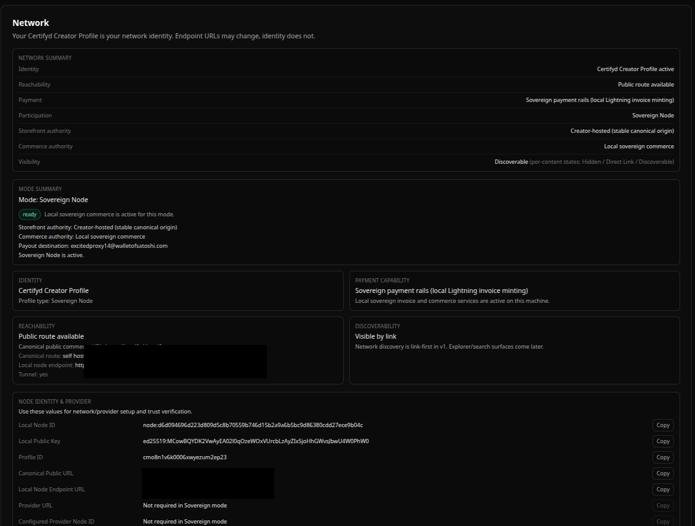
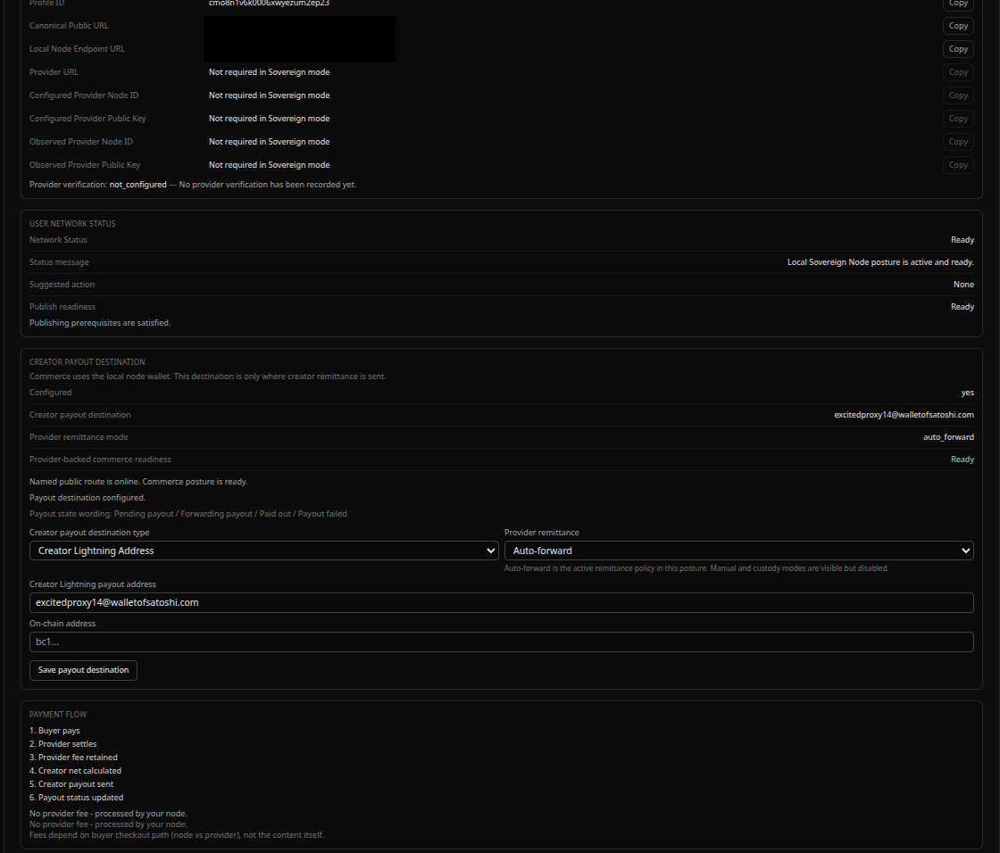
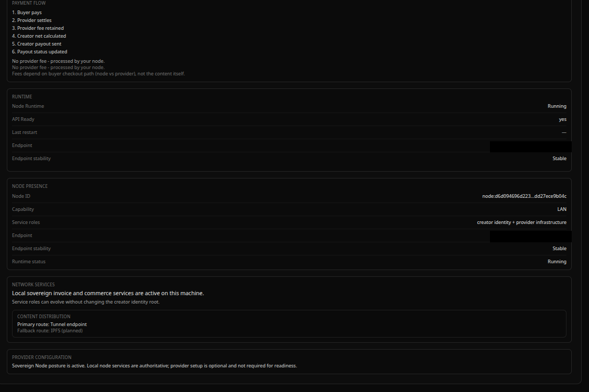
Set up a permanent address
To keep the same public address over time, you need a domain you own (for example, yourname.com), a Cloudflare account, and that domain’s DNS on Cloudflare. Core calls this a named tunnel. The next guide asks what you already have before showing setup steps.
- Open the tunnel guide. Choose I want a permanent custom hostname, or tell it about a tunnel or service you already run.
- Follow its steps for your setup. If you already have a tunnel, use its exact name or ID. When asked for Core’s destination address, enter
http://127.0.0.1:4010. - In Core, check that your chosen web address is shown as ready before relying on links for buyers.
It is fine to have other Cloudflare tunnels on this computer. Leave them running. Core also recognizes a Certifyd tunnel that you already run as a service.
Connect a payment provider node
A payment provider is another Certifyd node that can handle payments for your Core.
- First set up your permanent address on a domain you own. A temporary link is not enough for payments.
- On the Certifyd Network map, choose an available payment node, open Review provider details, and use Copy provider details.
- In Core, open Network → Provider Configuration. Paste its Provider URL and Provider Node ID exactly. Add the optional public key and profile ID if the map supplies them.
- Enable and Save provider, then follow Connect provider in Core. Wait for Core to confirm the connection is ready.
If you run your own payment node instead, use Node → Lightning. Your permanent address alone does not turn payments on.
What is Lightning?
Lightning is for people who run their own LND payment node. If another provider handles payments for you, you can skip this.
- If you operate your own LND, open Node → Lightning.
- Review the LND REST URL, network, macaroon, and TLS certificate fields. Use Auto-detect if Core can find a local candidate.
- Press Test, resolve the reported readiness issue if any, then Save in Core.
The macaroon and certificate are private connection details. Enter them only in your local Core settings, never in this guide.
What is Provider Console?
Provider Console is for operators offering payment services to other creators. It shows the creators served by the node, fees, sales, payouts, and node health.
Core shows this tab only when the node has the required operator setup. Most creators do not need it.
Show the advanced menu
- At the bottom of Core’s left menu, press Show Advanced.
- Look for extra items such as Configuration and Diagnostics.
- If an item is unavailable, Core will say what it needs. Showing the menu does not set up payments or splits.
Core may already show this menu for some setups.
What is Configuration?
Configuration holds your public link and tunnel settings. Use the tunnel guide when you want a temporary link or a permanent address.
If Cloudflare asks where to send visitors, use http://127.0.0.1:4010. Keep the dashboard address ending in :4000 private.
What is Diagnostics?
Open Node (Operator) → Diagnostics when you want to check how Core is working. This page groups the checks in one place:
- Clock sync checks whether your computer’s time is close enough for signed invitations to work. Press Recheck clock if you have corrected your system time.
- Public tunnel health shows the current status, public origin, health probe, last check, and public ping. Press Check tunnel health to check again. Named tunnels lists the tunnel objects Core can see; Refresh tunnels updates that list. Match the exact configured tunnel name or ID before treating one as yours.
- Backups (local) shows where backup files are stored, whether backups are enabled, how long they are retained, and recent files. You can press Run backup or Refresh list. Keep the backup files private.
- Test hosts checks the public hostnames you enter, one per line. Press Run tests, then Copy report if you need to share the result. The check uses
/api/healthand does not include secrets.
A reachable hostname and a connected tunnel object answer different questions. Read the result of the specific check before changing tunnel settings. Diagnostics does not edit your DNS.
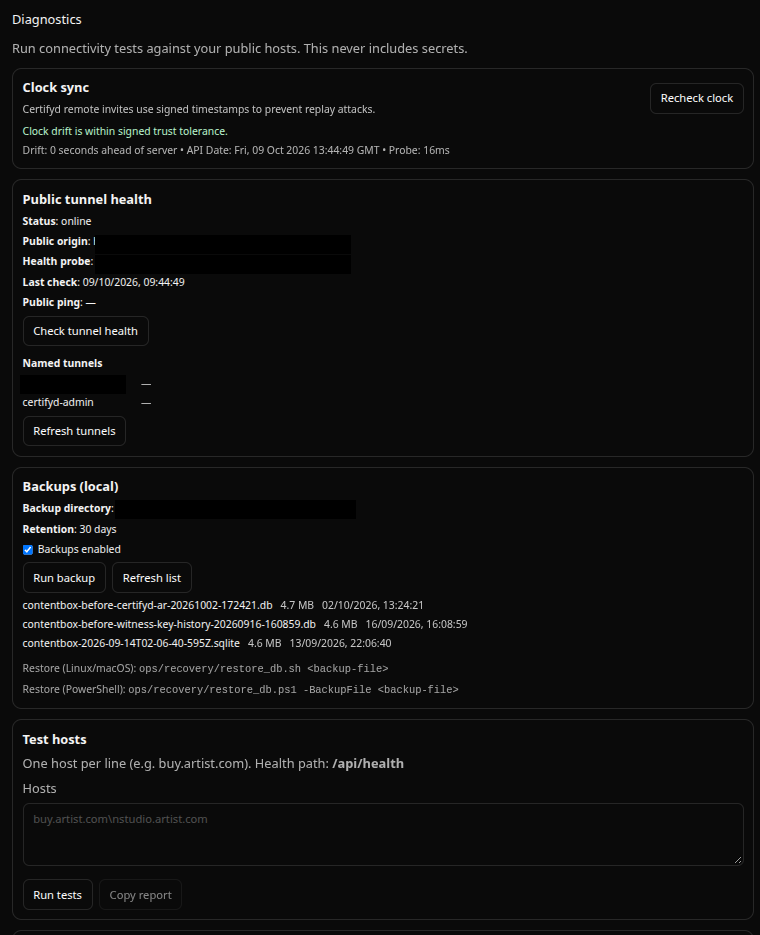
Edit a split (if sharing)
A split says who shares in a work and what percentage each person gets. Basic creators cannot create or accept a shared split. Both you and the people you invite need the required permanent identity and setup. Core checks this for each person. Start with your draft in Works; Manage Splits lists published works.
- In Works → Your Works → Certifyd Works, find the draft and press Edit splits.
- Press Add participant for each person. Enter their creator ID or email, their role, and their percentage. Include your own share. Intended total must be 100%.
- Press Save. Core creates invites. Open Split Invites, copy each link or token, and send it to the right person yourself.
- Wait for everyone to accept. Check that Active total is 100% with no required invite pending, then press Lock. Core saves a tamper-evident record of the agreed split.
- Finish the work details and publish it. The accepted participants will see the published work in their Library and can share it to their profiles. To change a locked split later, create a new version.
If Edit splits is unavailable, read the reason Core shows. Show Advanced does not remove these requirements.
Publish your first work
- Create a draft in Works → New Certifyd Work, save its media and cover, and follow Finish your work’s details.
- If you are charging, check the price and payment setup. If you share the work, Save the split, send the invites, wait for everyone to accept, and Lock it before publishing.
- Press Publish when the work is ready and any shared split is locked. Follow any message Core shows about what is still needed. To replace published media, make a new version. Accepted split participants will see the work in their Libraries.
- For its link, press Show details → Share → Public Link, then Open or Copy link. Network Visibility controls whether it is Hidden, available by Direct Link, or Discoverable.
In Basic, the work card has Publish and no Edit splits button. You can publish your free solo work without a split step.
After publishing, open the public link to check what visitors can actually see.
Find your published work in Library
Publishing finishes the work in Works. Library is where you find the works you can access, including the one you just authored. Showing a work on your public profile is a separate choice.
- Open Library in Core’s left menu. Find your title under Owned; use Relationship → Authored Work or a Type filter if you have several works.
- On the work’s card, choose Add to Profile if you want it on your public profile. If the card says ADDED TO PROFILE, its button becomes Remove from Profile. Leave it out or remove it if you want it only in Library.
- Choose Feature on Profile if you want the work to stand out there. This is separate from publishing and from the normal profile listing.
- Choose Open Public Page on the card to see the work’s public page. Then use Open public profile at the top of Core to check the profile listing and featured placement. You can still copy a direct work link from Works → Show details → Share.
A work with a locked shared split also appears in the accepted participants’ Libraries after publication. Each participant can decide whether to show it on their own profile.
A work being in Library does not by itself tell you whether it is on your public profile or featured. Check those settings and the public view separately.
Why is Commerce unavailable?
In Basic, you can create a profile, prove an identity, make a solo work, and share a temporary link. The Commerce tabs Audience, Revenue, Royalties, Rights Holders, and Manage Splits are unavailable.
For a permanent address and payments, choose Sovereign Creator above. You will need a domain and a payment provider, and Core will check the rest. Choose Sovereign Node if you run Bitcoin and Lightning services for other creators.
Read the Audience tab
Audience shows view activity for your content and a per-work breakdown. When commerce metrics are available, it also shows purchases and conversion. Use Refresh to load the latest numbers.
This Commerce view is unavailable in Basic. Purchase and conversion metrics require the appropriate commerce setup; an empty number does not by itself mean your work is broken.
Understand Revenue
Revenue shows several stages of getting paid. Overview shows status, Sales shows purchases, Content Intelligence shows each work’s performance, Earnings shows your share, and Payouts shows payments sent to you.
A sale does not mean you have received a payout. Core may keep this tab locked until your payment setup is ready.
Understand Royalties
Royalties shows works you are part of: your own work, accepted shared splits, and other connected works. Use it to see your role in a work.
Being listed on a work does not mean you have been paid. Check Revenue for sales, earnings, and payouts.
Keep exploring
Keep adding work and use Core’s messages to see what comes next. Your Basic link is temporary. When you want your own lasting web address and payments, switch this guide to Sovereign Creator. If you run payment services for other creators, choose Sovereign Node.Check your permanent address and payment readiness in Core before relying on paid links.
This guide shows you where to click. Changes to your Core happen only when you take those steps in Core.